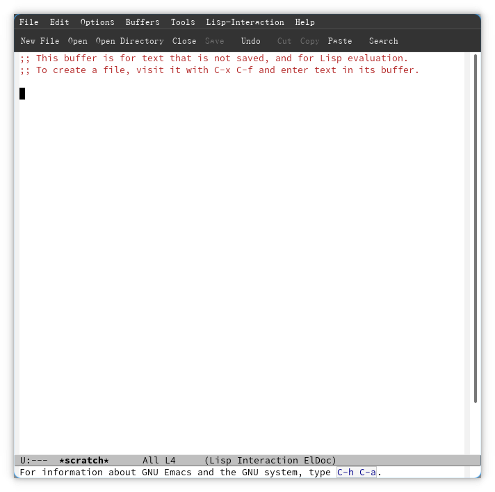
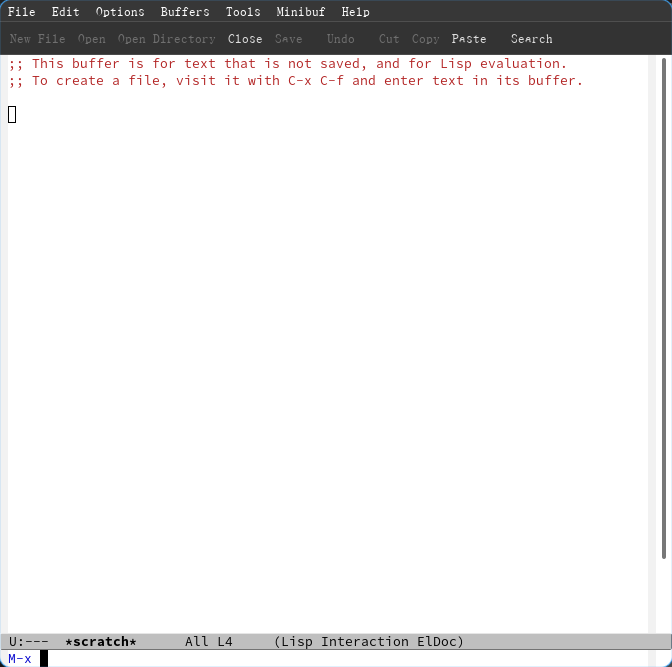
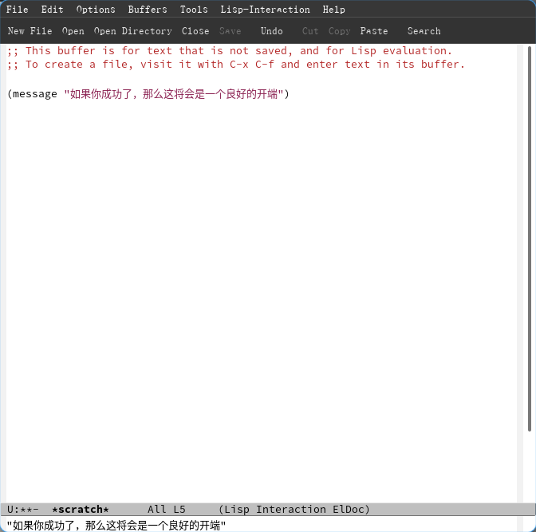
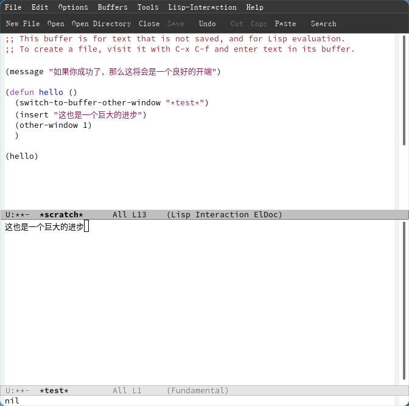

Emacs学习笔记
Table of Contents
1. 前言
学习Emacs，一定要学会坚持
我的语文水平不太好，所以说表述可能会有错误，请原谅。
并且这篇文章并非专业教程，建议与其他材料对比着看。
请在上方选择栏目继续阅读。
2. Emacs的安装与使用
2.1. Emacs的安装
使用对应发行版的包管理器安装Emacs
以Arch Linux为例：
pacman -S emacs
2.2. 使用Emacs
Emacs提供了GUI图形界面和TUI终端界面两种界面。
在图形终端输入命令 emacs 可以打开emacs的图形界面，或者使用 emacs -nw 打开非图形界面。

Figure 1: 图形界面
颜值不是emacs的强项，它默认的主题也确实挺丑，但是这掩盖不了它功能的强大。
2.3. 基本的操作
2.3.1. 一级按键操作 keys
为了方便展示，我将基本的 一级 操作写成表格列在下面：
| 分类 | 按键 | 调用的函数 | 功能/效果介绍 |
|---|---|---|---|
| C-p | previous-line | 上一行 | |
| C-n | next-line | 下一行 | |
| C-b | backward-char | 上一个字符 | |
| 移动 | C-f | forward-char | 下一个字符 |
| M-< | begginging-of-buffer | 跳转到文件开头 | |
| M-> | end-of-buffer | 跳转到文件末尾 | |
| C-l | recenter-top-bottom | 重置屏幕显示位置（光标居中、顶部、底部） | |
| C-v | scroll-up-command | 向下滚动一屏幕的位置 | |
| 翻屏 | M-v | scroll-down-command | 向上滚动一屏幕的位置 |
| C-a | move-beginning-of-line | 光标移动到行首 | |
| C-e | move-end-of-line | 光标移动到行末 | |
| 搜索 | C-s | isearch-forward | 向后搜索（顺序） |
| C-r | isearch-backward | 向前搜索（逆序） | |
| C-g | keyboard-quit | 在很多情况下可以终止命令的输入或者执行或是（在一般情况下）终止快捷键输入 | |
| C-k | kill-line | (Cut Line)删除光标右侧的内容并复制到剪贴板 | |
| C-w | kill-region | (Cut)剪切选择的内容 | |
| M-w | kill-ring-save | (Copy)复制选择的内容 | |
| C-y | yank | (Past)粘贴剪贴板的内容，粘贴历史详见官方tutorial | |
| 杂项 | M-@ | mark-word | 高亮字符/单词，我也不知道具体的机制 |
| S- | 可以在移动光标时同时按住Shift键，以选择字符 | ||
| C-/ | undo | (Undo)撤销，在撤销前输入一个无关的命令会相反（重做） | |
| C-q | quoted-insert | 输入字符本身而不是进行其他操作（后面还需一个参数） | |
| C-u | universal-argument | 重复执行某个操作多次 | |
| Elisp | M-x | execute-extended-command | 打开命令行执行命令 |
| M-: | eval-expression | 打开elisp命令行 |
注：
C-*意为Ctrl + key，而M-*意为Meta + key，其中的Meta键由于不再在现代的键盘上使用，所以一般使用Alt键作为替代。苹果用户请另查资料。
这些一级的按键操作构成了emacs最基本的操作逻辑，但是，这还远远不够
2.3.2. 多级按键操作 keys
或许你会有疑问：为什么没有退出？
那是因为退出按键是一个多级的按键操作。
所谓的多级，其实是我乱取的一个称呼，实际上就是要连续按下多个快捷键。
打个比方，emacs中退出的快捷键是 C-x C-c ，即 Ctrl+x Ctrl+c 。这种快捷键模式的形成主要还是得归功于键盘上的按键不够，为了能塞下尽可能多的快捷键，就产生了这么一种“反人类”的快捷键模式，是区别于Vim多模式方法的另一种解决办法。这或许就是 Emacs学习的第一大门槛，但我要引用一些话，它们来自于Vim的官中教程vimtutor:
切记一点：本教程的设计思路是在使用中进行学习的。也就是说，您需要通过执行命令来学习它们本身的正确用法。如果您只是阅读而不操作，那么您可能会很快遗忘这些命令的！
...
特别提示：在浏览本教程时，不要强行记忆。记住一点：在使用中学习。
...
阅读完以上步骤，弄懂它们的意义，然后在实践中进行练习。
在学习Emacs时，也应当记住上面的提示，毕竟在学习任何东西时，实践是极为有用的方法。而我在写这篇教程时，也在尽力尝试做到引导让人在实践中学习。
注意，由于编辑器系统较为复杂，所以有较多东西是没有办法一下子塞进来解释清楚的，在学习前期的内容时更要注意以“能用”为目的，学到后面才是以“理解”为目的。在理解了 Emacs之后才能够更好地学习、扩展学识。
下面给出一个常用命令的列表：
| 类型 | 按键 | 对应函数 | 功能介绍 |
|---|---|---|---|
| C-x | 一个前缀，其下的命令大都和窗口、文件有关 | ||
| C-x C-c | save-buffers-kill-terminal | 询问文件保存并杀死终端（说直白点就是退出Emacs） | |
| C-x k | kill-buffer | 杀死当前打开的buffer | |
| C-x 0 | delete-window | 关闭聚焦的窗口（或说是正在操作的窗口） | |
| 窗口 | C-x 1 | delete-other-windows | 关闭非操作的窗口（即只保留正在操作的窗口） |
| C-x 2 | split-window-below | 在窗口的下面分割出一个新的窗口 | |
| C-x 3 | split-window-right | 在窗口的右边分割出一个新的窗口 | |
| C-x o | other-window | 切换到其他窗口 | |
| C-x C-e | eval-last-sexp | 执行上一个距离光标最近的elisp语句 | |
| C-x C-; | comment-line | 将当前行或者选中行注释 | |
| C-c | 一个前缀，常用于特定的主模式的功能（供参考） | ||
| C-h | 一个前缀，用于获取帮助信息 | ||
| 帮助 | C-h c | describe-key-briefly | 获取指定按键所调用的函数名称（可作为一种"帮助"） |
| C-h k | describe-key | 获取指定按键所调用的函数的介绍信息 | |
| C-h t | help-with-tutorial | 打开官方的tutorial |
2.4. 命令行操作
2.4.1. emacs函数思维
实际上emacs的所有操作都是基于某一个特定的函数的。这也就是有实际意义的按键后面都有一个“调用的函数”的原因。
若要讲清楚什么是函数，那就要扯到elisp去了，这里简单解释一下，函数分为 交互式函数 和 非交互式函数 两种，而交互式函数则被允许被用户从普通的命令行直接用函数名进行调用或者设置快捷键进行调用，反过来非交互式函数则是不被允许的，但是也可以通过 elisp命令行使用elisp语法进行调用（一般是在命令外面套上一对括号，理解就好）
2.4.2. 普通的命令行
通过快捷键 M-x 进行调用，如图：

Figure 2: 调用命令行的图片
你可以在里面输入命令，并且可以使用Tab键进行补全。你可以尝试使用 C-h c 找到一个你想要使用的命令并在命令行里面输入查看结果
2.4.3. elisp命令行(evil)
这个由于在前期并不常用，所以也不细说，只要记住：它可以进行elisp的命令调用
2.5. 小结
在阅读完上面的文本并进行大量尝试与练习之后，相信你已经可以正常的使用emacs了吧
但是，也仅限于会使用。如果想要真正发挥emacs的实力，你还需要学会配置emacs。请继续往下看。
3. Emacs的配置与调教
3.1. 先来点降压药
如果你真的想依靠默认的快捷键配置使用emacs，那简直是不可理喻的事情。
我最想吐槽的或许就是emacs的快捷键——Ctrl，它作为emacs的常用快捷键的基础，它竟然在键盘的左下或者右下角，这决定了大多数情况下你的小拇指都不会好过。所以说，为了拯救小拇指，你或许应该考虑给Ctrl键换个位。
对于Windows10专业版的用户来说，可以选择安装微软官方出品的 Powder Toys 工具箱，在里面的“键盘映射”选项中将你的 Caps Lock 键（即大写锁定键）映射为左右任意一个Ctrl，那么你的小拇指将会得到极大的解放。注意，该程序对于系统有版本的要求，非专业版用户无法使用。
对于苹果用户来说，请自查资料。本人财力有限，无法对网上的方法进行验证。
对于Linux用户来说，如果你想要在tty下更改键位，或许可以参考 这部分Arch Wiki，若想要在X图形界面下更改键位，则只需要命令
$ setxkbmap -option 'caps:ctrl_modifier'
即可让Caps Lock映射到Ctrl Left，同理更改选项则可以获得不同的效果。获取选项的命令如下：
$ grep -e "ctrl:\|:ctrl" /usr/share/X11/xkb/rules/evdev.lst
这部分的内容来自于 这部分的Arch Wiki，可以前去参考
由于目前我切换到了wayland(Hyprland)的新兴领域，所以这里再附上Hyprland下怎么把 Caps Lock映射到Ctrl的方法：在
$HOME/.config/hypr/hyprland.conf（即你的 hyprland配置文件）添加：input { kb_options = ctrl:nocaps }
3.2. 配置Emacs/elisp
emacs的配置文件语法是elisp（即emacs lisp），属于lisp语言的一种方言。由于其语法独特，也可以说是emacs的第2个大门槛了
一个小提示： 这里有一篇相对来说非常好的elisp教程，建议查看它的教程，或者互相参考。
3.2.1. 基本语法 elisp
lisp语言的本质是列表（list），其语句组成大致如下:
(function_name argument)
即一句语句由一对括号包住，组成一个列表，第一个部分为函数名称，后面的内容即为调用函数时要传递的参数。这样就构成了一个基本的表达式，我们称之为 s式 。
在执行语句时，它的逻辑是自内向外的，会将作为参数的语句执行后将其结果作为参数传递，若想传递的值是它本身而非是执行它的结果，则应该使用一个引号 ' 放置在元素的前面。
简单举一个例子：
(a (b 'c))
在这个例子中，解释器将会执行函数 b 并将 c 这么一个符号作为参数传递进去，并将其执行的结果作为参数传递进函数 a 并执行。
要想学会elisp，只有理论怎么能行？实践那都是必须的。
若想要在Emacs里面执行Elisp语句可以通过以下几种方式：
- 使用快捷键
C-x C-e可以执行光标前面最近的s式 - 通过进入
eshell执行语句 使用快捷键
M-:打开命令行执行elisp语句
我们可以使用Emacs默认打开的buffer *scratch* 结合 C-x C-e 练习elisp语法。
尝试键入下面的内容并将光标移动到命令的下面再键入执行命令的快捷键：
(message "如果你成功了，那么这将会是一个良好的开端")
执行结果应当如下：

Figure 3: 执行结果
不难看出，这个语句的意思就是在消息栏里发送通知。
所以说，现在你已经学会了基本的elisp语法了，请保持这种激昂的学习情绪，继续看下去。
3.2.2. 一些例子 elisp
配置配置，肯定都是要贴合实际的，是有强功能性的。在平时的使用中应当多提问题，多想想解决办法解决问题。
举个例子，如果我想实现一个功能，能够实现自动在当前窗口的右侧分割出一个新的窗口并在里面打开一个新的buffer，并且在那个buffer里面插入一些指定的内容该怎么办呢？
正常情况下我们应当寻找一个函数，其功能是在一个当前的窗口右侧打开的新窗口中打开一个新的buffer。这里废话少说，直接公布答案： switch-to-buffer-other-window ，这个函数便能满足我们的需求，只要在后面加上要打开的buffer的名字即可。
接下来我们要找的是一个能够在光标处插入文本的函数，这里也一并放出： insert ，在后面加上要插入的内容。
最后，我们需要一个能够返回到当前窗口的函数，即 other-window ，参数传递为1。
放上最终的代码：
(switch-to-buffer-other-window "*新的buffer*") (insert "这是你想要输入的内容") (other-window 1)
3.2.3. 函数 elisp
但是聪明的你肯定会发现，上面的语句都是单独执行的，没有办法连成一块，是没有办法成功执行的。那么，有没有一种可能，可以将多个语句的内容合并到一起去呢？有！那就是函数。
函数的定义语句为
(defun name () (message "......") )
其中， name 表示名称，其后的括号表示参数列表，里面可以填变量名，再往后便是执行语句了。
就以刚才的功能举例，我们可以将其扔进一个函数内部，执行完函数的定义语句后，再添加一个执行函数的代码并执行即可。在执行定义语句时，会将函数的名称返回并显示到通知栏。
其结果应当如下：

Figure 4: 执行结果
值得注意的是，函数并非连接多个语句的必经之选，实际上还有 progn 语句可以实现相似的功能，有些时候我们并不希望定义一个函数但是参数必须是一个函数时，我们可以使用 lambda 临时函数而不必定义一个函数名
3.2.4. 变量 elisp
继续刚才的内容。作为一门完整的语言，elisp也不缺变量这个东西，不过它的分类较多。大致如下：
- 全局变量
- 普通的全局变量
- customize的全局变量
- 局部变量
- 局限于函数
局限于作用域
首先是全局变量，它的作用域应当是最广的，优先级也是最低的，它的定义方法如下：
(defvar name initvalue "docstring")
其中， name 是名字， initvalue 是初始值，而 docstring 则是介绍文档。一般用于向用户说明函数的功能。
还有另外一种全局变量，定义如下：
(defcustom name standard "docstring" args)
这个就属于elisp里面的“方言”部分了，有了它，你就可以通过 M-x customize-option 设置变量的值并保存在customize的生成的内容里了。顺带一提， args 是它的参数，可以传入 :type ...:group ... 进行设置，一个指定类型，二个指定它所属的组，方便管理（组需要使用 defgroup 额外定义）
接着的就是局部变量了。在我的认知范围内，变量的作用域有两种：作为函数参数的局部变量和额外定义的局部变量。这里只谈额外定义的局部变量。
定义一个变量的语法如下：
(let ((name 0)) (message "这部分是执行语句"))
即一个列表，列表里面再套个列表，第一个是变量名，第二个是初始值
设置变量的语法如下：
(setq name 0)
也可以使用 set ，但是变量名前需要有 ' 包裹。
该函数也可以定义全局变量或者对已有的变量重定义，而 defvar 则不可以。
而使用 setq-local 函数则可以定义一个作用域为当前buffer的变量
3.2.5. 流程控制语句 elisp
既然基本的语法学了，那么流程控制语句也不能丢。
注：在elisp中的布尔值一般表示为
t和nil，分别表示真和假。
这里我就简单提一些(知识有限，请原谅)：
(if (表达式) (执行语句))
判断(unless (表达式) (执行语句))
判断，但是是在结果为nil执行
3.2.6. 数据的输入 elisp
- read-char
读取char输入 - read-number
读取数字类型输入，建议使用C-h f read-number查看详细介绍
3.2.7. 主模式？副模式？
Emacs有一个非常强大的机制：模式。而模式则分为 major-mode 主模式 与 minor-mode 子模式。而他们也决定着Emacs的快捷键绑定方式，所以在了解如何绑定快捷键之前，我们有必要了解一下Emacs的模式系统。
首先，一个Buffer只能同时使用一个主模式，一般会根据文件类型自动选择，而一个buffer 能够同时开启多个子模式。而主模式通常会有一个hook用于在启动某个模式时自动执行某些命令（与Elisp代码 (add-hook ...) 搭配使用）
3.2.8. 快捷键的定义 elisp
如果要配置Emacs，快捷键一定是一个跨不过去的门槛。因为有很多操作总不可能是需要手动打命令吧？如果是，你能记熟吗？相较于习惯形成的肌肉记忆，你选择那个呢？
先介绍一些常用的Emacs中设置快捷键的语句，并附上他们之间的区别：
| 名称 | 功能（区别） | 作用域 |
|---|---|---|
| global-set-key | 设置全局快捷键，但是优先级最低（会被覆盖） | 全局 |
| global-unset-key | 删除特定的快捷键 | |
| local-set-key | 仅在相应的major主模式下可用 | major-mode |
| local-unset-key | 删除特定的快捷键 | |
| define-key | 最为基础的快捷键定义，可自定义keymap | 指定的keymap |
| kbd | 能够将字符形式的按键转为真正的按键 |
先来看 global-set-key ，它的优先级最低，作用域为全局，其语法如下：
(global-set-key (kbd "KEY") 'command)
其中， KEY 为要设置的快捷键，如 C-c f F ，而 command 则为函数的名字或者宏1 的名字。其意思为在按下 KEY 时，执行 command 。
而 global-unset-key 的用法如下：
(global-unset-key (kbd "your-key"))
local-set-key 的用法和 global-set-key 的语法基本一样，仅仅是作用域不同了。这里举个实际例子：
(add-hook 'c-mode-hook (local-set-key (kbd "C-c f") (lambda () "这是介绍文档" (interactive) (message "Hello world") ) ) )
在该例子中，用到了一个lambda函数，其大致功能是在 c-mode 时，定义快捷键 C-c f 并执行临时函数，在状态栏输出 Hello world 字样。其中，函数的 (interactive) 语句是必须添加的，它声明函数是一个交互式函数，使其允许被以快捷键的方式调用。如果将其运用在实名函数中，则可以使函数能在 M-x 中调用并执行。
define-key 的用法则相对复杂些，其语法如下：
(define-key keymap key def)
引用一段介绍：
这里的
key是你要绑定的键。keymap是这个key所属的集合，不同的keymap决定了这个key在什么情况下触发，什么情况下隐藏，优先级如何。def代表了这个key的定义，它可以是很多东西，常见的有：
- 一个
interactive function，即一个command，这也是键绑定最直接的方式。- 一个
key，仅对于keymap为'key-translation-map这种情况，意味着映射到另一个键。- 一个
keymap，通过这种方式用户可以自定义prefix key。一个
nil，代表注销这个key。keymap也有很多种，如
current-global-map返回全局keymap，current-local-map返回局部keymap。对于这两种情况，Emacs提供了更直接的函数：global-set-key和local-set-key。另外还有上面提到的key-translation-map，以及许多minor-mode 下定义的keymap。
3.2.9. 宏 elisp
看到“宏”这么一个字眼，是不是就会觉得很晦涩难懂？不不不，正巧相反，它不仅简单，而且能够在某种程度上减轻你配置的工作量，或者实现一些特殊功能。
首先，要使用宏，我们就应该知道宏是什么。根据最狭隘的理解，就是能将你进行的操作保存下来，并可以重复执行这个操作。这在做某些重复性劳动时的效率极高，并且还不用去思考如何通过编写lisp语句（至少可以省下很多思考时间）去实现相应的功能，或者去了解那些复杂的接口之类的。
那么，“宏”到底怎么用呢？首先，我们需要按下 C-x ( 以开始录制一个宏。然后接下来的操作将被记录下来，再结束时再按下 C-x ) 即可。
但是这只是录制罢了，还有使用呢。如果这是一个临时的宏，则可以使用快捷键 C-x e 执行上一个定义的宏，并且能够继续按 e 键继续执行，也可以使用 C-u 次数 C-x e 以执行数次该宏。倘若该宏需要保存在文件中，则可以使用 M-x name-last-kbd-marco 为上一个定义的宏命名。在命名后，则可以打开一个el文件。执行 M-x insert-kbd-marco 并输入相应的名字即可插入录制好的宏。并且可以为其设置相对应的快捷键。而设置快捷键所传进的参数（函数名称一栏）则填定义的宏的名称。例如：输入：
C-a C-k C-k C-p C-y
形成的elisp代码，并设置全局快捷键 F5 ：
(fset 'move-line (kmacro-lambda-form [?\C-a ?\C-k ?\C-k ?\C-p ?\C-y] 0 "%d")) (global-set-key (kbd "<f8>") 'move-line)
在这个例子中， move-line 是宏的名字，在其下方则定义了其快捷键 F8 。如果按下设置的快捷键，将会执行该宏，而其效果为将当前行与上一行交换。简单粗暴。
但是值得注意的是，这种宏不能够适应keymap的变化。在执行时就有可能会出现问题，所以还请谨慎使用。
3.2.10. 引用 elisp
既然文件都拆分成几个了，那么就少不了引用。
上文中我讲了文件应当如何让自己允许被引用，那么就应当知道如何引用文件。
首先，你需要在你的init.el添加这么一句：
(add-to-list 'load-path "~/.emacs.d/lisp/")
其中 add-to-list 的功能是为指定的列表变量添加一个元素，在这里添加的即为文件的加载目录。而后面的 load-path 则是加载列表的变量，而最后的字符串则是你想要加载的el文件所处的文件夹。
在这之后，就可以添加引用的语句了：
(require 'name)
name 为你的文件里填写的 provide 的名字。
另外，这里提供一段设置custom文件的配置，这里不作解释。
(setq custom-file (expand-file-name "~/.emacs.d/custom.el")) (load custom-file 'no-error 'no-message)
最后，这里额外提示一下，如果不希望使用 provide 和 require 的方式，则可以使用 load-file 方式加载执行Elisp文件，具体例子如下：
(load-file "这里是你的文件路径与文件名，要自己改")
3.2.11. 文件规范 elisp
在平时，你的每一个emacs的配置文件应该被命名为 xxx.el ，而Emacs最开始调用的文件是 init.el 文件。根据习惯，它应该存放在 ~/.emacs.d/ 目录下，即 ~/.emacs.d/init.el 文件。
根据规范，针对插件包来看，el文件应该有一个这样的架构：
;;; init.el --- 这里填这个文件的描述 -*- lexical-binding: t; -*- ;; Copyright (C) 2023 不要在意我的头像QwQ ;; Author: 不要在意我的头像QwQ <Chglish@Chglish> ;; Keywords: docs, c, lisp, files ;; This program is free software; you can redistribute it and/or modify ;; it under the terms of the GNU General Public License as published by ;; the Free Software Foundation, either version 3 of the License, or ;; (at your option) any later version. ;; This program is distributed in the hope that it will be useful, ;; but WITHOUT ANY WARRANTY; without even the implied warranty of ;; MERCHANTABILITY or FITNESS FOR A PARTICULAR PURPOSE. See the ;; GNU General Public License for more details. ;; You should have received a copy of the GNU General Public License ;; along with this program. If not, see <https://www.gnu.org/licenses/>. ;;; Commentary: ;; 这里理论上是填写文件的评论的地方 ;;; Code: ;; 这里存放你的代码 (provide 'init) ;;; init.el ends here
注意，在lisp中以分号开头的行均为注释，但是不同的分号数量为开头的注释是有不同的含义的。下面做出一些解释：
- 3个分号开头的注释可理解为段落的标记
- 2个分号开头的注释可以理解为正常的行注释
1个分号开头的注释一般而言和2个分号开头的注释没有什么区别，但是会有很大可能会做出一些非常令人迷惑的缩进，所以通常使用2个分号开头作注释。（这也是Emacs的注释快捷键所默认的注释方式）
需要值得注意的是，上面给出的是一些相对严格的注释规范，实际上对于个人的配置来说是可选的。下面是一个简化过后的示例，建议使用它作为创建el文件的模板（若没有使用自动插入文件头功能）。
;;; 这边是文件名 --- 这里填这个文件的描述 ;;; Commentary: ;;; Code: ;; 这里中间的部分用于存放你的配置 (provide '这里的名称是文件名去掉后缀) ;;; 这里同样也是文件名 ends here
这里只对 provide 作简单的解释。它的功能主要是将一个文件的内容“导出”，让其允许被其他文件引用( require )并执行，有利于配置文件模块化，方便管理。
温馨提示：
init.el实际上没有必要使用provide，因为它就是总调用文件
下面再给出一个参考用的文件结构：
~/.emacs.d/
├── custom.el
├── init.el
└── lisp
├── init-auto-insert.el
├── init-auto-save.el
├── init-better-defaults.el
├── init-custom.el
├── init-keybindings.el
├── init-loop-alpha.el
├── init-open-files.el
├── init-org.el
├── init-packages.el
├── init-quickly-input-c.el
└── init-ui.el
3.3. 配置Emacs!
如果想要照抄配置，可以参考参考那些大佬的配置，例如 Purcell的配置，或者是 陈斌的配置，再或者是其他的2。这里我再提一个建议：可以尝试将自己的配置发布在Github上。
憋了这么久，是不是特别难受？在学完了上面的所有内容之后，你应该对于elisp这门解释型语言有了一定的了解。那么下面，我们将正式开始对Emacs的配置。
emacs的设置根据设置方式可以被分为两类：子模式与变量。其中，变量的配置可以说是在子模式的基础上建立起来的。因为开启子模式用于启用功能，而变量则是设置这些功能的细节，当然也不排除编辑器本身的功能变量设置
额外提示：有些时候mode也可以使用设置变量的方式开启，所以不能够保证绝对没有混淆的内容，只能尽量减少
由于这类内容过多，所以将采取使用表格的形式列出，请自行选择与使用
3.3.1. 子模式功能 elisp Emacs的功能
| 适用范围 | 名称 | 功能描述 |
|---|---|---|
| 程序样式 | tool-bar-mode | 可以开启工具栏（默认开启），传入参数0可关闭 |
| menu-bar-mode | 可以显示菜单栏（其余同上） | |
| display-time-mode | 显示时间，传入参数t开启 | |
| 默认工具 | save-place-mode | 记忆文件上次打开的位置 |
| electric-pair-mode | 自动补全括号（和引号之类的） | |
| column-number-mode | 在默认状态栏显示行号 | |
| global-auto-revert-mode | 自动重新读取被改动过的文件 | |
| delete-selection-mode | 选中文本后输入文本会替换文本 | |
| global-display-line-numbers-mode | 在窗口显示行号（传入参数t开启） | |
| global-hl-line-mode | 高亮当前行（传入参数t开启） | |
| savehist-mode | 打开Buffer历史记录保存 | |
| global-display-fill-column-indicator-mode | 在设置的自动换行大小3处显示一条竖线 | |
| 文本编辑 | auto-fill-mode | 能够实现文本自动换行 |
| 编程 | auto-insert-mode | 能够实现在新建一个源文件时自动插入文件头 |
| show-paren-mode | 光标在括号上时高亮另一个括号 | |
| indent-tabs-mode | 使用tab键缩进，但是效果不详4 | |
| hs-minor-mode | 启用代码缩进，默认的快捷键开头是 C-c @ | |
| Org Mode | org-indent-mode | 在org模式下编辑文件时自动缩进（美观好看） |
3.3.2. 变量功能设置 elisp Emacs的功能
| 适用范围 | 名称 | 描述 |
|---|---|---|
| 程序设置 | make-backup-files | 设置为nil可以关闭自动备份文件5 |
| auto-save-default | 设置为nil可以关闭自动保存 | |
| display-line-number-type | 设置行号的类型（ 'relative 为相对行号） | |
| fill-column | 设置自动换行的宽度（设置数值） | |
| tab-width | 设置一个tab的显示宽度（我设置为8） | |
| 编程 | c-basic-offset | 设置C语言一个缩进的大小（我设置为8） |
3.3.3. 其他设置 elisp Emacs的功能
(load-theme 'name)
加载主题，名称为name
4. 使用插件！
既然是Emacs，那么怎能够不使用插件呢？插件是Emacs极为强大的功能之一，我将在这里介绍如何在Emacs中安装并使用插件
4.1. 插件的安装 插件
Emacs有（相对）统一的插件管理仓库MELPA，里面有很多的插件可供下载使用6
要设置它，请在配置文件中使用
;; 添加仓库 (require 'package) (package-initialize)
以初始化插件。不过默认的插件仓库是国外的，很慢，所以说要设置一下仓库的镜像源7。这里附上一段配置文件：
;; 添加仓库 (require 'package) ;(add-to-list 'package-archives '("melpa" . "https://melpa.org/packages/") t) (setq package-archives '( ("melpa" . "http://mirrors.tuna.tsinghua.edu.cn/elpa/melpa/") ("gnu" . "http://mirrors.tuna.tsinghua.edu.cn/elpa/gnu/") ("org" . "http://mirrors.tuna.tsinghua.edu.cn/elpa/org/"))) (package-initialize)
4.1.1. 手动安装插件
确保无误后，便可在Emacs里执行 M-x package-list-packages 以打开插件列表。下面是部分快捷键：
| 快捷键 | 作用 |
|---|---|
| i | 标记插件为安装标记 |
| d | 标记插件为删除标记 |
| u | 清除插件的标记 |
| x | 执行插件的标记 |
| U | 标记所有可升级的插件 |
搜索和Emacs的默认快捷键相同是 C-s 和 C-r 。找到要安装的插件，按下 i 进行标记，再按下 x 执行标记。插件就安装好了。
但若你早就知道了插件的名称，只是想要安装插件，则可以执行 M-x package-install 并输入想要的插件名称即可安装。
4.1.2. 通过配置文件自动安装插件
既然能够手动安装插件，那么通过配置文件自动安装插件也是不可少的。
让我们先分析一下逻辑：我们需要确认一个插件是否安装，若无安装则需要安装插件。于是，我们便有了以下代码：
(unless (package-installed-p 'evil) (package-install 'evil))
在上面的示例中，将检查是否有安装 evil 这个插件，如果没有，则安装插件。
不过这是一种比较麻烦的办法，通常推荐修改上面的示例以安装 use-package 这个插件，并加入以下配置：
;; 进行设置 (eval-and-compile (setq use-package-always-ensure t) ;不用每个包都手动添加:ensure t关键字 (setq use-package-always-defer t) ;默认都是延迟加载，不用每个包都手动添加:defer t (setq use-package-always-demand nil) (setq use-package-expand-minimally t) (setq use-package-verbose t)) ;; 加载插件 (eval-when-compile (require 'use-package))
便可使用以下方式安装插件：
(use-package package_nmae)
注：如果在上面的配置中不加入
(setq use-package-always-ensure t)这段内容，则在每个插件配置处加上一行:ensure t以确保插件安装。
4.2. 插件的配置 插件
上文有提到过 use-package 这个插件，它不仅能够安装插件，还能够对插件进行配置。就例如 evil ，一个能够在Emacs中使用（大部分）Vim键位的插件。在安装插件后，往往需要使用 (xxx-mode) 的方式去启动插件，这时就可以使用以下代码来解决：
(use-package evil :init (evil-mode))
其中的 :init 是种类似于标记的东西，它的标签还有：
| 标签 | 描述 |
|---|---|
:init | 初始化插件用 |
:config | 配置插件，需要执行 :init 段后执行 |
:hook | 添加命令到hook上，如 :hook (after-init . evil-mode) 就意为在after-init hook后打开evil |
:bind | 用于绑定快捷键，如 :bind ("KEY" . function) 就将function绑定到快捷键 KEY 上 |
:after | 设置在加载什么插件后加载，如 :after flycheck |
:commands | 不明 |
:ensure | 确保安装插件 |
4.3. 插件推荐/我用的插件 插件
| 名称 | 功能描述 |
|---|---|
| evil | 在Emacs下使用Vim的功能与键位 |
| monokai-theme | 一款Emacs主题 |
| benchmark-init | 能检查启动速度的插件 |
| smart-mode-line | 更好的状态栏（会冲突） |
| powerline | 另一种状态栏（会冲突） |
| powerline-evil | 拥有Evil模式提醒的状态栏（会冲突） |
| which-key | 显示可用键位，辅助使用快捷键 |
| company | 一个自动补全插件 |
| yasnippet | 补全模板插件 |
| yasnippet-snippets | 补全模板 |
| org-bullets | 让Org的标题有特殊样式 |
| smex | 快捷输入命令 |
| flycheck | 一个语义检查插件 |
| flycheck-clang-analyzer | |
| lsp-mode | lsp语法解析 |
| projectile | 项目管理插件 |
| magit | 在Emacs下使用Git |
| window-numbering | 为窗口加上编号，按下 M-n 切换到第n个窗口 |
| valign | 像素级别的Org中文表格对齐 |
| vimish-fold | 能够想vim一样折叠内容 |
| htmlize | Org导出到html的代码块代码高亮功能 |
| vundo | 能够实现将undo以树状形式显示 |
5. Emacs的部分主模式
在
2.3.2 多级按键操作中有讲到过， C-c 这样一个快捷键前缀常用于主模式特有的快捷键。在学习完上面的内容加上一段时间的练习之后，你应该基本学会了如何使用emacs，那现在，就让我们继续学习Emacs的部分主模式内容吧。内容可能收录不全，但对于那些常用而拓展功能又很多的模式来说应该够用了。
5.1. Org-mode
org文件是org-mode对应的文件，类似于markdown是一门标记性语言。结合emacs使用具有许多强大的功能，将在下文中一一介绍
Btw官网似乎有一份很好的 Quickstart可以看看。
这里有一份 org语法测试示例文件可以用于研究org-mode的语法
5.1.1. 文件语法
宽泛地说，org语法包括以下内容：
- 元数据(Metadata):
指定设置有关于文档的内容，如总标题、作者、日期、代办关键词、导出设置等- 构成:
#+NAME:TEXT
语句前面可以有空格；其中NAME部分不区分大小写，不可以有空格；TEXT部分随意。 - 如果在多行分别指定了相同的Metadata，部分会将字符串用空格拼接起来，部分是后面的metadata覆盖前面的
部分
NAME对应表：meta名称 作用 title设置文章标题 author指定文章作者 date设置文章日期 description设置文档描述 setupfile引用外部的metadata配置，后跟文件路径或者网络链接 caption为插入的图片设置别名 options文档设置，如设置最大章节标题层级等 startup启动设置，例如说fold:打开文件时默认折叠所有标题 tags设置编辑文件时会用到的tag，可以设置对应的快捷键快速添加 seq_todo设置文件用到的TODO的tag，分为待办和已完成两类 html_link_home导出为html时设置的"HOME"的链接 html_link_up导出为html时设置的"UP"的链接 html_head导出为html时额外添加的头文件信息 latex_complier设置导出pdf时使用的latex引擎 latex_header生成tex文件时额外添加的头文件信息 更多的meta和属性将另起一章讲述
- 构成:
章节标题(Headline):
构成:* [TODO|COMMENT] TEXT- 星号前面不能有空格，星号的数量代表标题的层级，星号越多层级越深。
[TODO|COMMENT]是TODO状态和注释状态的关键词，是可选项，大小写敏感。- TODO状态默认有
TODO和DONE两个关键词，可以通过seq_todo自定义关键词。 - COMMENT表示该标题和子标题被注释掉了，导出时不会将他们的内容导出。如果在关键词位置前出现了非关键词则后面的关键词无效。如果出现了两个TODO关键词则后面的关键词视作非关键词。
示例：
* 一级标题 ** 二级标题 * TODO 标记为待办的标题 * DONE 标记为完成的标题 * COMMENT 标记为注释的标题 * TODO COMMENT 标记为待办且注释的标题 * COMMENT TODO 错误的待办标记但正确的注释标记的标题 * TODO DONE COMMENT 正确的待办标记，无效的完成标记，错误的注释标记
行内效果/标记(Markup)
行内效果包括 链接脚注8,与标记共同包括逐字、代码、 斜体 、 *粗体*、删除线、 下划线 。逐字效果和代码效果类似，且内部/*无法再嵌套*/其他效果，但是可以在外部将其包括，其余的标记都是可以相互嵌套的。链接显示的文字也是可以套用标记效果的行内效果包括[[http://][链接]]脚注[fn:8],与标记共同包括 =逐字= 、 ~代码~ 、 /斜体/ 、 *粗体*、 +删除线+ 、 _下划线_ 。 =逐字= 效果和 ~代码~ 效果类似，且内部 =/*无法再嵌套*/= 其他效果，但是可以 /*=在外部将其包括=*/ ，其余的标记都是可以相互嵌套的。链接显 示的文字也是可以[[http://][*/_+~套用标记效果的~+_/*]]。
- 链接，格式：
[[url][alt]]，url为链接，alt为显示的名称。图片：如果url指向的是一个图片文件且没有alt选项则会将链接解读为图片。在任意单独独立成行的图片链接前增加一行
#+CAPTION:...则可以指定图片的别名- 例子1:

例子2:
例子3:
Figure 5: 别名
- 例子1:[[http:/img/background.jpg]] - 例子2: [[http:/img/background.jpg]] - 例子3: #+CAPTION: 别名 [[http:/img/background.jpg]]
- 例子1:
- 链接，格式：
- 列表(List)
- 区块(Block)
- 注释(Comment)
- 表格(Table)
5.1.2. 按键绑定 keys
未完待续